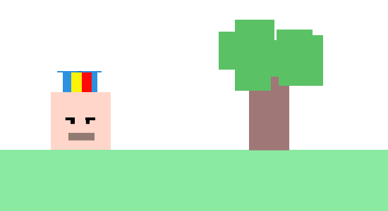

História do Calvão
Calvão era uma criança solitária e introspectiva, cujos dias eram preenchidos com momentos de solidão e silêncio. Ele era diferente das outras crianças, não apenas por sua natureza reservada, mas também por uma característica física que o tornava alvo de zombaria e crueldade: sua calvície precoce.
Desde cedo, Calvão enfrentou o bullying e a rejeição dos seus colegas de escola por causa de sua condição. Eles o perguntavam que shaampoo usava, fazendo-o sentir-se isolado e indesejado. Apesar de tentar se esconder sob bonés e capuzes, sua calvície era uma marca indelével que ele carregava consigo, uma fonte constante de vergonha e humilhação.
